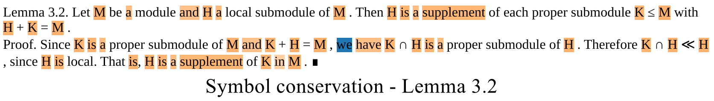
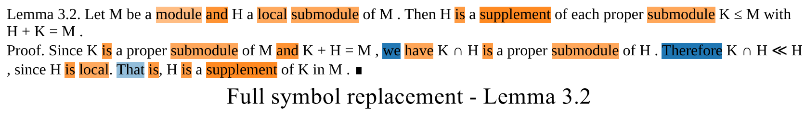

Bilinear scoring
Encoded statement and proof representations are compared with a trainable bilinear association function.
EACL 2023
University of Edinburgh · University of Copenhagen
MATcH studies whether models can align mathematical statements with their proofs, and how much they rely on notation overlap instead of deeper mathematical evidence.
MATcH introduces a task for matching mathematical statements to their corresponding proofs. The dataset contains more than 180k statement-proof pairs extracted from modern mathematical research articles based on the MREC corpus, making it a large-scale benchmark for mathematical information retrieval.
The paper studies bilinear similarity models, local and global decoding, ScratchBERT, MathBERT, and symbol replacement procedures. The results show that global decoding improves assignment coherence, while symbol replacement reveals that models can make relatively shallow use of mathematical text and formulae.
MATcH frames proof retrieval as a structured assignment problem over statement-proof scores.
Encoded statement and proof representations are compared with a trainable bilinear association function.
Each statement independently ranks candidate proofs according to its row of the score matrix.
A one-to-one constraint prevents many statements from selecting the same proof.
The dataset includes multiple splits and symbol replacement levels for measuring robustness beyond shared notation.
Extracted from professional mathematical writing in arXiv research articles.
ScratchBERT with local training and global decoding on conservation data.
Accuracy under full symbol replacement with ScratchBERT local-global decoding.
Pairs from the same article can span train, development, and test.
Pairs from the same article appear in only one split, creating a harder benchmark.
Conservation, partial, full, and transposition settings stress-test notation use.


@inproceedings{li-etal-2023-bert,
title = {BERT Is Not The Count: Learning to Match Mathematical Statements with Proofs},
author = {Li, Weixian Waylon and Ziser, Yftah and Coavoux, Maximin and Cohen, Shay B.},
booktitle = {Proceedings of the 17th Conference of the European Chapter of the Association for Computational Linguistics},
year = {2023},
address = {Dubrovnik, Croatia},
publisher = {Association for Computational Linguistics},
url = {https://aclanthology.org/2023.eacl-main.260/},
doi = {10.18653/v1/2023.eacl-main.260},
pages = {3581--3593}
}